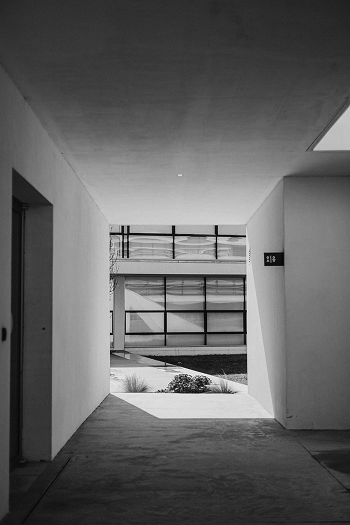

Lumière Épurée

Résidence contemporaine baignée de lumière naturelle
Découvrez Lumière Épurée, un projet architectural où la modernité rencontre la simplicité. Conçue pour maximiser la lumière naturelle, cette résidence se distingue par ses lignes épurées, ses volumes ouverts et ses espaces fluides qui invitent à la sérénité et à la convivialité.
Architecture et design
Chaque détail a été pensé pour créer un équilibre parfait entre fonctionnalité et esthétique. Les façades vitrées et les matériaux naturels mettent en valeur la clarté des espaces intérieurs, tandis que la disposition ouverte favorise une circulation fluide et une ambiance lumineuse constante.


Lumière naturelle
Le projet tire parti de l'orientation et des ouvertures pour inonder chaque pièce de lumière naturelle. Cette approche favorise non seulement le bien-être, mais crée également un dialogue harmonieux entre intérieur et extérieur.